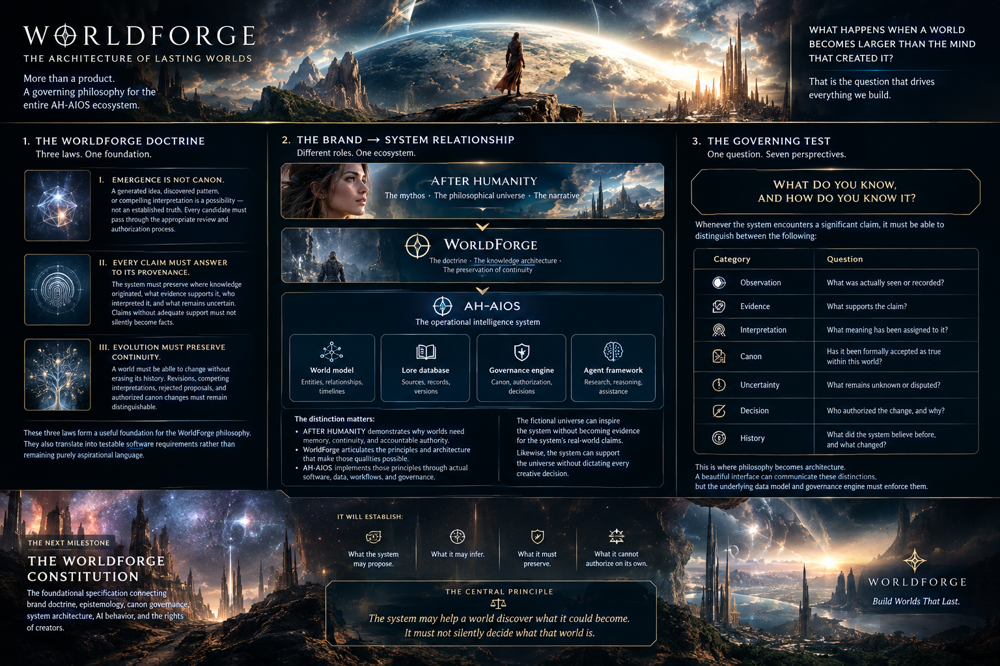

LAW I / EMERGENCE
✧
Emergence is not canon.
A generated idea or discovered pattern is a possibility—not an established truth. Candidate ideas must pass review.
Read the law →Creation scales faster than understanding. WorldForge connects imagination to memory, evidence, provenance, and accountable change—so a world can evolve without losing itself.

These are not just slogans. Each law becomes a constraint on how the system records, reasons, proposes, and changes a world.
A generated idea or discovered pattern is a possibility—not an established truth. Candidate ideas must pass review.
Read the law →Preserve origin, evidence, interpretation, and uncertainty. Unsupported claims must not silently become facts.
Read the law →Change is allowed. Erasure is not the default. Revisions, rejected proposals, and authorized canon changes remain distinct.
Read the law →The philosophical universe and narrative that reveal why memory, continuity, and accountable authority matter.
The principles and knowledge architecture that connect creation to evidence, provenance, and continuity.
The operational intelligence layer: world model, lore database, governance engine, and agent framework.
The principle at the center of the WorldForge Constitution.